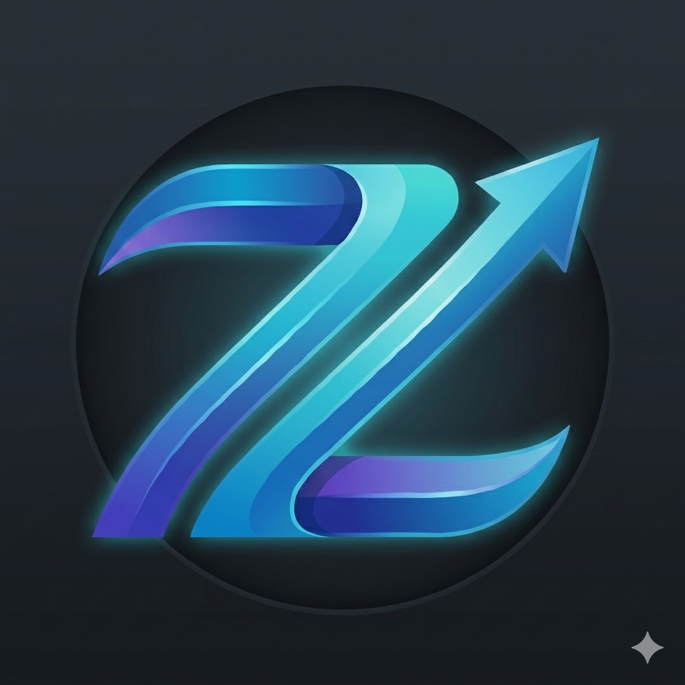

Learn.
Build.
Create.
Zyphor OS is an educational Linux distribution designed to guide users through learning, development, and open-source contribution instead of leaving them to figure everything out alone.

Why Zyphor OS?
Designed for learners, makers, and future maintainers.
Educational First
Learn Linux, development, system administration, and open-source workflows sequentially.
Lightweight
Optimized for performance, incredibly low resource consumption, and ultimate productivity.
Developer Ready
Pre-built with essential packages for programmers, contributors, and creators out of the box.
Philosophy & Vision
Created By: Mark Jason P. Espelita
Built upon the Linux kernel, Debian userspace, and Kali Linux build scripts, Zyphor OS explores how operating systems can become more controlled, simplified, and user-focused without sacrificing flexibility and technical depth.
1. Minimal & Controlled
Reducing unnecessary software and background complexity to promote intentional system design. Users maintain total clarity and control over their environment to reduce overhead.
2. Zyphor CLI Layer
Preserving the strength of Linux while abstracting syntax headaches. Zyphor CLI offers unified, centralized system operations so you don't have to struggle memorizing fragmented syntaxes.
"Abstraction over complexity."
3. Unified Package Logic
Forget managing conflicts across APT, Snap, Flatpak, and source files. One clean workflow handles the execution while Zyphor internally targets dependencies and matching environments.
“Users should focus on software, not package mechanics.”
4. Independent Platform Vision
Gradually evolving from a custom-tailored Debian alternative into an independent software platform ecosystem with internally built and maintained repositories.
5. Educational & Init-Based Skeleton
Unlike modern distros relying heavily on massive initialisation engines like systemd, Zyphor utilizes a traditional init-based initialization model. This allows developers to directly track process pipelines, boot milestones, and service structures transparently.
“Systems should not only be usable — they should also be understandable.”
• Shell development frameworks
• Low-level boot architectures
Note: Zyphor OS isn't trying to directly chase or compete with market footprints like Ubuntu or Arch. Instead, it serves as a pure demonstration of proactive systems architecture thinking, initiative-driven development, and the belief that continuous learning breeds execution capability.
100%
Open Source
Linux
Powered Foundation
∞
Learning Potential
The Future Belongs To Builders
Most people consume technology. Mark Jason P. Espelita and Zyphor users learn how to create it.
Get Started Now